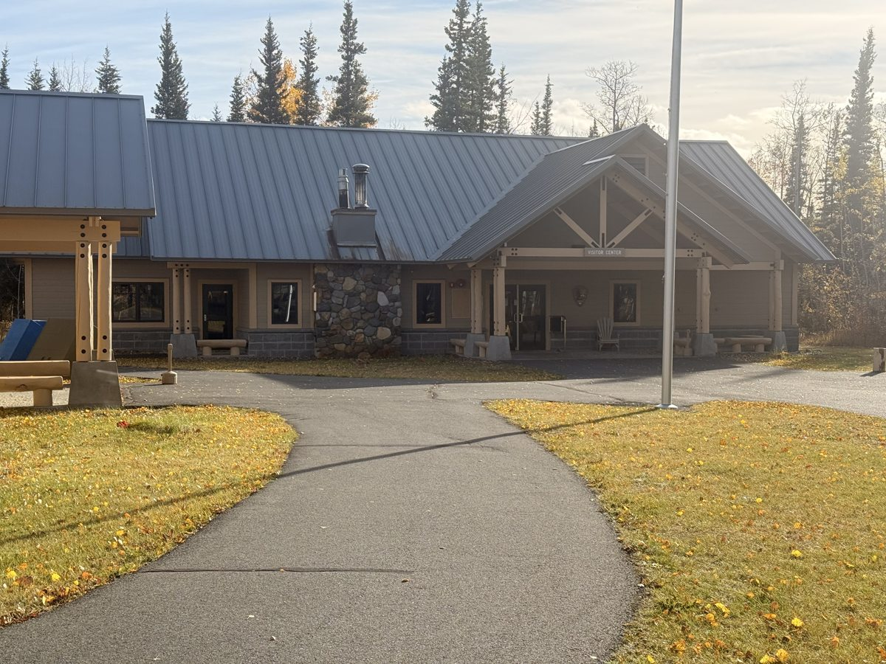
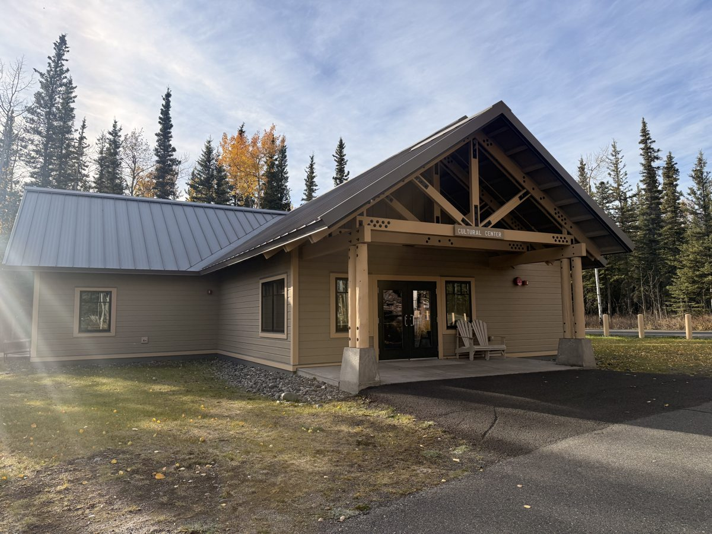
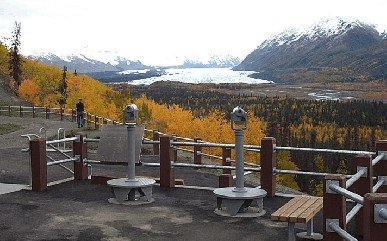

NPS / Neal Herbert
NPS / Neal HerbertDAY 8
蘭格—聖伊萊亞斯
Wrangell–St. Elias
從 Copper Center 的展覽與短步道開始，認識這片巨大荒野；若想進入 Kennecott，請另留一段旅程。
PLAN / OBSERVE / EXPERIENCE
把這座公園玩得更明白
行程安排、現場觀察與旅行經驗，放在一起閱讀。
這一版看的是公園入口，不是整座公園
本路線先住 Copper Center，翌日上午到遊客中心、Ahtna Cultural Center 和附近短步道，再沿 Glenn Highway 回 Anchorage。它適合坐車為主、也想看展和簡單走走的旅客。
Kennecott、McCarthy 與 Root Glacier 是另外的深入行程。到遊客中心不等於已到那些地點；想加礦鎮或冰川健行，需要另排交通、住宿與導覽。
看展怎麼看：先定位山系，再認識生活
先用園區地圖了解公園大小與不同入口的位置，再看影片和展覽。如此走到戶外時，眼前的山景就能和遠方冰川、河流及其他區域連起來。
Ahtna Cultural Center 補上原住民族與土地、河流生活的視角。兩個中心的開放安排可能不同，若文化中心休館，把時間留給遊客中心和可開放短步道。
親身經驗：回程加 Matanuska 很適合短走
回程曾停 Matanuska Glacier State Recreation Site 健行，並遇到野生駝鹿。森林步道加上冰川觀景平台，讓一整段公路移動中有機會下車走走，也提供另一種看冰川的方式。
Edge Nature Trail 可到觀景位置，但州立休憩區沒有通往冰川表面的入口。想遠眺、散步可選這站；想踏上冰川則需另訂導覽，不能把兩者當成同一活動。
時間怎麼留：回城段包含步道才算完整
上午看展和短走後吃午餐，約 13:00 出發；下午在 Matanuska 留約一小時，回 Anchorage 約晚上七點是規劃估時。遇施工或天候變化，先縮短沿途停留。
野生駝鹿是當時的偶遇，不是固定賣點。動物若靠近步道，停下或退開；不靠近、不餵食，也不要為拍照耽誤回程到失去緩衝。
全部為阿拉斯加當地時間。「班表／業者」為官方所列時間；「建議／估時／示範」是本行程預留的活動與移動時間。火車頁面已更新到 2027 夏季；公園接駁仍有 2026 版本，請核對出遊年度。不同船班請依票券替換；本表採 12:00 Seward 船班。
DAY 08
Wrangell–St. Elias＋Matanuska 冰川觀景
這一天是遊客中心與短步道入門版，不包含 McCarthy、Kennecott 或 Root Glacier。從 Copper Center 出發，上午看展與散步；下午沿 Glenn Highway 回城，可在 Matanuska Glacier State Recreation Site 短走、遠眺冰川。
今晚住宿區域：Anchorage
- 08:00–09:00建議
早餐、退房，前往遊客中心
附近住宿到園區的時間依位置而異。先核對當季開門時間；若晚於 09:00，往後平移上午活動。
- 09:00–10:30建議
Wrangell–St. Elias Visitor Center
看地圖、影片與展覽，詢問蓋章、Junior Ranger 及短步道路況。

Copper Center 的 Wrangell–St. Elias 遊客中心，秋季實景 · NPS · 照片來源 遊客中心｜看展、蓋章與 Junior Ranger
先詢問當天服務與手冊要求，再分配展覽和短步道。蓋章與徽章不是同一項活動；審核需要 ranger 與足夠時間。
看展與散步以當天開放區域為準，保留前往下一站的交通時間。
- 10:30–11:15建議
Ahtna Cultural Center
若有開放，認識當地原住民族與河流生活；若休館，把時間留給遊客中心展覽，不將此站寫成保證可入內。

Ahtna Cultural Center 外觀，秋季實景 · NPS · 照片來源 Ahtna Cultural Center｜理解這片土地上的生活
展覽補上原住民族的文化與河流生活，讓山川不只是空曠的風景。此中心與 NPS 遊客中心的開門安排可能不同。
看展與散步以當天開放區域為準，保留前往下一站的交通時間。
- 11:15–12:00建議
遊客中心周邊短步道
依現場可開放路線，安排約 30–45 分鐘散步。這不是走上冰川的行程。
Copper Center 的 Wrangell–St. Elias 遊客中心，秋季實景 · NPS · 照片來源 Wrangell–St. Elias｜從入口看尺度
公園範圍廣闊，山地、冰川與河流分布在不同區域。Copper Center 的影片、地圖與步道提供入門視角，不能等同到過 Kennecott 或 Root Glacier。
現場看什麼：用地圖把 Copper Center、遠方山系和冰川的位置連起來，再走園區附近短步道。這段只認識公園入口，不把遠處冰川或礦鎮算成已造訪。
- 12:00–13:00建議
午餐與返程準備
可事先準備野餐，使用允許的用餐區；出發前上廁所、確認油量。
- 13:00–15:30估時
Copper Center → Matanuska 觀景休憩區
沿 Glenn Highway 西行，預留約 2.5 小時含短休息。目的地為 Mile 101 的 Matanuska Glacier State Recreation Site，不是冰川導覽集合點。

Glenn Highway 沿線的 King Mountain 與 Long Lake · NARA / FHWA · Courtesy HDR Alaska, Inc. · Public domain · 照片來源 公路沿線｜另一個阿拉斯加視角
Glenn Highway 串起山谷與內陸地景，與鐵路的視角不同。只在允許停車且安全的觀景位置停留；網站預留的車程含短休息，不含冰川導覽。
沿途停留：挑安全且允許停車的觀景點，短暫伸展和拍照；不在公路路肩臨時停車。遇施工或天候變化，先確保抵達住宿，再刪減觀景。
- 約 15:30–16:30建議停留
Matanuska Glacier State Recreation Site｜健行、遠眺冰川
親自走過，當時還看到野生駝鹿（moose）！從休憩區走 Edge Nature Trail，穿過森林前往冰川觀景平台。官方介紹步行約 20 分鐘，本表留一小時給散步、觀景、拍照與休息。這裡可以看冰川，但沒有通往冰川表面的步道。

Matanuska 州立休憩區的觀景平台與遠方冰川，秋季示意照片 · Alaska State Parks / Alaska DNR · 照片來源 Matanuska｜在森林與谷地之間讀懂冰川
從高處觀景平台，可以把遠方冰川、前方谷地與兩側山坡放進同一個畫面。這是看冰川整體尺度的方式；近距離冰上導覽則觀察冰面與裂隙，兩者視角不同。Edge Nature Trail 穿過森林通往觀景位置，適合當作公路旅行中的步行休息站。
看展與散步以當天開放區域為準，保留前往下一站的交通時間。
- 16:30–19:00估時
沿 Glenn Highway 返回 Anchorage
預留約 2.5 小時含短休息；道路施工或天候可能延後抵達。若不加觀景步道，可直接回城，較早入住休息。
- 約 19:00–20:30建議
入住 Anchorage、晚餐
翌日再還車和搭機，不把當天長途駕駛與必須準時起飛的返程航班硬接在一起。
本表的州立休憩區適合森林短走、隔著谷地看冰川，不需要把數小時的冰川導覽塞進返程。若想實際踏上冰川，須另訂合適導覽、確認交通入口與裝備，並重排當日時間；不能沿這條觀景步道走上冰川。
曾在此遇到野生駝鹿，但不保證每次到訪都看得到。保持距離，讓動物保有移動空間；若牠擋住步道，先停下或退開，不為拍照靠近。
McCarthy／Kennecott 與冰川活動應獨立規劃交通、住宿與導覽。本日只完成 Copper Center 入口體驗，沒有涵蓋那些地點。
班表與景點資料
NPS｜Copper Center 遊客中心 ↗NPS｜Wrangell–St. Elias ↗Alaska State Parks｜Matanuska 觀景與 Edge Nature Trail ↗Cabin Nite｜場次、訂位、餐飲與接駁 ↗Fly Denali｜冰川飛行、時長與班次 ↗Fly Denali｜接送與天候問題 ↗Reserve Denali｜出發前 48 小時查詢時刻 ↗Alaska Railroad｜列車班表（目前為 2027 夏季） ↗Alaska Railroad｜報到規定 ↗Kenai Fjords Tours｜鐵路接駁與船班 FAQ ↗Alaska Railroad｜5.5 小時遊船產品 ↗NPS｜Denali 巴士時長與預約 ↗NPS｜Denali 免費接駁班表 ↗Katmai Air｜Brooks Falls 當日往返 ↗照片：NPS / Neal Herbert · 來源